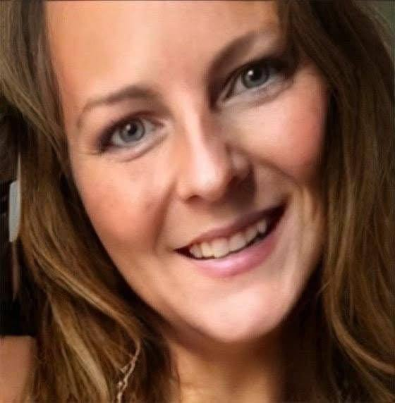
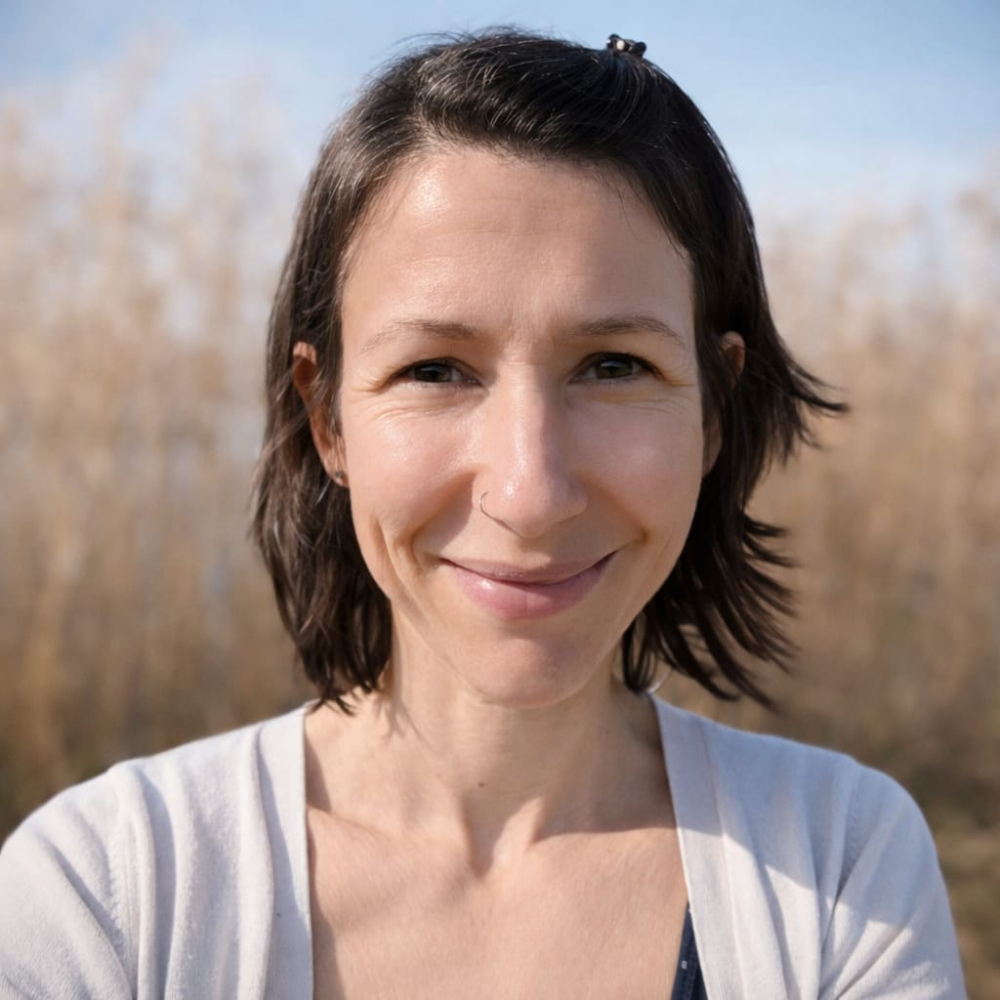

Für Frauen 35+, die mühelos einen schlanken und starken Körper erreichen,
10 Jahre jünger aussehen und sich energiegeladen und strahlend fühlen wollen.
Kein Diäten. Kein Burnout. Kein Bullshit.
KOSTENLOSES ERSTGESPRÄCH BUCHEN
Die meisten Coaches arbeiten an der Oberfläche. Sie geben dir einen Plan. Sie sagen dir, was du essen sollst. Sie fragen nicht, warum du es vorher nicht durchhalten konntest.
Ich arbeite anders. Weil ich etwas verstehe, das die meisten übersehen: Dein Körper existiert nicht isoliert. Deine Transformation geht nicht nur um Essen. Es geht um den Raum, in dem du lebst. Die Überzeugungen, die du trägst. Die energetischen Muster, die dich festhalten.
Ich bin diesen Weg selbst gegangen. Nicht einmal, sondern mehrmals. Ich weiß, was es bedeutet zu scheitern. Neu anzufangen. Zu entdecken, dass die Antwort nicht im nächsten Programm liegt – sondern darin, das ganze System zu verstehen.
Deshalb bin ich gründlich. Ich lasse keine Details unbeachtet. Ich gebe dir keine Vorlage und verschwinde. Ich denke systemisch. Dein Körper. Dein Zuhause. Deine innere Landschaft. Alles davon zählt.
Wenn du mit mir arbeitest, bekommst du nicht nur Ernährungsbegleitung. Du bekommst jemanden, der die Verbindungen sieht, die andere übersehen. Jemanden, der weiß, dass eine blockierte Küche deine Beziehung zur Nahrung beeinflusst. Dass ungelöste emotionale Muster sich in deinem Essverhalten zeigen. Dass dein Umfeld deine Transformation entweder unterstützt – oder sabotiert.
Mein Ansatz: Ich verbinde Körpertransformation mit klassischem Feng Shui (die Kompass-Methode, nicht Deko-Tipps) und tiefer innerer Arbeit. Dein physischer Körper. Dein energetischer Raum. Deine psychologischen Muster. Alle drei müssen sich ausrichten für dauerhafte Veränderung.
Was ich dir übertrage, ist nicht nur Information. Es ist meine unerschütterliche Gewissheit, dass dies funktioniert. Dass du es schaffst. Dass Transformation unvermeidlich wird, wenn das ganze System angesprochen wird.
Du hörst auf zu zweifeln. Du beginnst zu wissen.

Ich habe vorher Transformationsprogramme ausprobiert. Keines hat angesprochen, was ich wirklich brauchte.
Mit drei kleinen Kindern, für die ich separat koche, während ich selbst meinen eigenen Weg finde – ich fühlte mich zerrissen. Wie ehre ich, was ich als richtig für meinen Körper erkenne, während meine Familie anders lebt? Wie gebe ich meinen eigenen Bedürfnissen wieder Raum, nach Jahren, in denen ich alles für alle anderen gegeben habe?
Dann fand ich Amy.
Sie gab mir keinen Einheitsplan. Sie zeigte mir, wie ich meinen Weg gehe, während meine Familie ihren Weg geht – mit Klarheit, ohne Konflikte, ohne es zum Familienprojekt zu machen.
Via WhatsApp (Montag bis Freitag) war sie immer da. Kein Detail war ihr zu klein. Jede Unsicherheit, jede Frage – sie hatte praktische Antworten. Keine Theorie. Echte Lösungen.
Als ich nicht wusste, wie ich mit Familienessen umgehe – sie zeigte mir, wie es geht.
Als ich daran zweifelte, ob ich das wirklich schaffen kann – sie gab mir ihren unerschütterlichen Glauben. Dass es funktioniert. Dass ich es schaffe. Dass es nicht schwer sein muss.
Drei Monate später:
Ich fühle mich top fit. Voller Energie. Mental klar. Ich brauche weniger Schlaf, habe mehr Vitalität, und fühle mich wieder wie ich selbst – wirklich ich selbst, nicht nur „Mama".
Und dann kam der Moment, den ich nie vergessen werde:
Alle in meiner Familie hatten die Grippe. Fieber. Husten. Das volle Programm.
Ich war die Einzige, die nicht krank wurde.
Mein Mann – der immer dachte, mein Ansatz sei „ein bisschen viel" – sah mich an und sagte: „Was machst du anders? Ich will das auch probieren."
Heute fragt er, was ich esse. Er interessiert sich. Er sieht die Ergebnisse an mir.
Nicht, weil ich ihn überzeugt habe. Sondern weil er gesehen hat, wie gut es mir geht. Wie ich aussehe. Wie ich gesund geblieben bin, während alle anderen krank wurden.
Amy überträgt ihren Glauben auf dich. Und plötzlich zweifelst du nicht mehr – du weißt einfach, dass es funktioniert.
Wir prüfen, ob Raw & Real für dich passt. Nicht jede wird angenommen – das schützt uns beide.
12 x 60-Minuten-Calls + WhatsApp-Support Montag bis Freitag. Ich bin bei jedem Schritt an deiner Seite.
Körpertransformation + energetische Raumklärung + innere Arbeit. Dein Körper, deine Energie und deine Ausstrahlung – verwandelt.
Investitionsdetails besprechen wir im kostenlosen Erstgespräch.
Rechtlicher Hinweis: Dies ist Lifestyle-Coaching und Erfahrungsaustausch, keine medizinische Behandlung, Ernährungstherapie oder Psychotherapie. Individuelle Ergebnisse variieren.
Lass uns herausfinden, ob Raw & Real für dich passt.
So geht's weiter:
Hinweis: Im kostenlosen Gespräch prüfen wir gemeinsam, ob Raw & Real für deine Situation geeignet ist. Nicht jede wird angenommen – das dient dem Schutz beider Seiten.